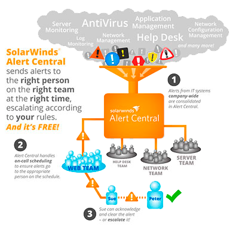

Permite monitoreo de red, optimización de aplicaciones, mejora el rendimiento de las Bases de Datos y promueve el cumplimiento de los estándares de seguridad dentro de su empresa. Esto mediante una interfaz sencilla de usar e intuitiva. Provee ahorro de tiempo, visibilidad, reportes y eficacia en detección, diagnóstico y solución de problemas de rendimiento de redes, facilitando así, la administración de su entorno de TI.
